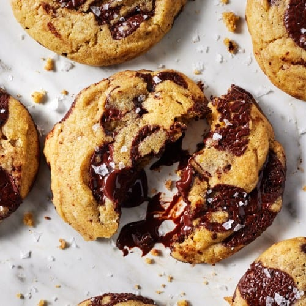

CHOCOLATE CHIP COOKIE
 Wet Mix:
Wet Mix:
3/4 cup white granulated sugar
Dry Mix
2 1/4 cups all purpose flour
Mix-ins
2 cups semi-sweet choco-chips
1/2 cups walnuts or pecans (optional)

Prep Work
Preheat your oven to 190°C (375°F). Line two large baking sheets with parchment paper or silicone mats.
Cream butter and sugars
In a large bowl, beat the softened butter, white sugar, and brown sugar together until the mixture is light and fluffy (about 2 minutes). Add the eggs one at a time, beating well after each addition. Stir in the vanilla extract.
Combine Dry ingredients
In a separate smaller bowl, whisk together the flour, baking soda, and salt. Gradually add this dry mixture into the wet ingredients. Pro Tip: Mix until just combined—don't overwork the dough or the cookies will be tough!
Fold in the goods
Stir in the chocolate chips (and nuts if using) by hand using a spatula.
Bake the cookies
Drop rounded tablespoons of dough onto your prepared baking sheets, spaced about 2 inches apart. Bake for 9 to 11 minutes or until the edges are golden brown but the centers still look slightly soft.